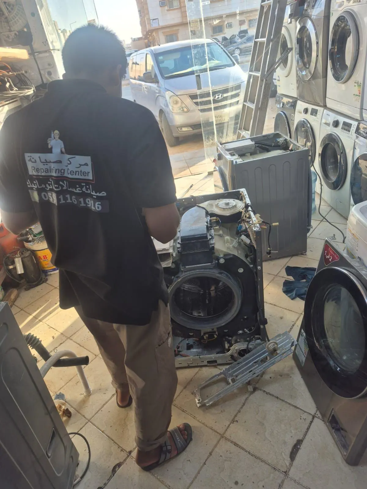

تصليح غسالات اتوماتيك في شمال الرياض
من الشمال تصلنا خمس مكالمات بشكل متكرر: الغسالة لا تصرّف، أو لا تعصر، أو تسرّب، أو لا تشتغل، أو لا يفتح بابها. وهذا ما تفحصه بأمان أولا، وما ترسله لنا.
نشر بواسطة إصلاح الغسالات الأوتوماتيكية · آخر تحديث: نوفمبر 2026
هذه الصفحة جزء من دليلنا لـ صيانة غسالات اتوماتيك في الرياض.

ما أحياء شمال الرياض التي تزورونها؟
نزور المنازل في الملقا والعارض والنرجس والياسمين وحطين والصحافة والربيع والقيروان. ولبعضها صفحات خاصة: العارض والنرجس.
مقرنا في اليرموك شرق المدينة، ولذلك نؤكد معك موعد الزيارة عند الاتصال.
قاعدة أمان أولا
افصل الغسالة عن الكهرباء وأغلق صنبور الماء قبل أن تلمس أي شيء. لا تفتح الأجزاء الكهربائية، ولا تفتح الباب المقفل بالقوة.
خمس مشكلات نسمعها أكثر من غيرها
ابحث عن عطلك في الجدول وجرّب الفحص الأول الآمن فقط. وإن لم ينفع فتوقف واتصل بنا.
| ما تراه | الفحص الأول الآمن |
|---|---|
| الماء يبقى في الأسطوانة | انظر هل خرطوم التصريف مثني خلف الغسالة، ثم اقرأ دليل عدم التصريف |
| الأسطوانة تمتلئ ولا يأتي العصر | وزّع الغسيل المبلل بالتساوي وشغّل العصر وحده. وإذا بقي ماء بداخلها فصرّفه أولا |
| ماء على الأرض | جفف الأرض وشغّل برنامجا قصيرا ولاحظ أين يظهر الماء أولا |
| لا يحدث شيء عند الضغط على التشغيل | افحص القابس والمقبس وصنبور الماء وتأكد أن الباب مغلق جيدا |
| الباب لا يفتح | انتظر دقائق بعد انتهاء البرنامج. ولا تشد المقبض بقوة. وراجع دليل الباب |
لماذا لا تشتغل غسالتي؟
ابدأ بالأمور البسيطة. هل المقبس يعمل؟ هل القابس مثبت جيدا؟ هل الصنبور مفتوح؟ هل الباب مغلق تماما؟ كثير من الغسالات ترفض التشغيل إذا لم تسجل الباب مغلقا. وإذا كان كل ذلك سليما وبقيت الشاشة مظلمة فقد يكون السبب في الداخل، وهذا عمل فني. وفي صفحة الغسالة لا تعمل فحوصات أخرى.
ماذا أصوّر قبل الاتصال؟
الصور تغني عن مكالمة طويلة. صوّر ما يلي وأرسله على واتساب.
- الشاشة إن كان عليها رمز أو ضوء.
- ملصق الموديل، وغالبا يكون على إطار الباب أو في الخلف.
- مكان الماء على الأرض والغسالة ظاهرة في الصورة.
- مقطع قصير للصوت إذا كان الصوت هو المشكلة.
المجمعات السكنية والعمائر ذات البوابات
كثير من المنازل في الشمال داخل مجمعات سكنية، وقد يلزم تسجيل الفني عند البوابة. أرسل لنا اسم المجمع ورقما للتواصل عند الحجز، وأخبرنا برقم الفيلا أو الشقة. هذا يوفر الوقت عند المدخل. والأمر نفسه في الياسمين وبقية الأحياء المذكورة.
ما الذي لا يحتمل الانتظار؟
التسريب المتزايد، أو الباب المقفل والماء ما زال بداخله، يحتاج إلى انتباه أولا. أما الغسالة التي تعصر ببطء فيمكنها غالبا أن تنتظر موعدا يناسبك. استخدم تقديرك: إذا كان الماء يتحرك على الأرض فاعتبره عاجلا وقل لنا ذلك عند الاتصال.
ماذا أرسل على واتساب؟
رسالة واحدة تكفي. مثلا: اسم الحي، فيلا أو شقة، الماركة، العطل في جملة واحدة، والصور من القائمة أعلاه. يقرؤها الفني قبل الزيارة ويأتي مستعدا.
كيف تتم الزيارة؟
يشخص الفني الغسالة في مكانها ثم يخبرك بالعطل والتكلفة. ولا يبدأ شيء إلا بعد موافقتك. أغلب الإصلاحات تتم في اليوم نفسه الذي تتواصل فيه معنا، بحسب العطل والقطع. وعلى القطع والعمل ضمان 30 يوما.
لماذا يتصل بنا أهل الشمال؟
تقييمنا على قوقل 4.8 من 264 مراجعة. ونبقي الاتصال بسيطا: صف العطل وأرسل الصور ونقول لك بصدق متى نستطيع القدوم. وإن كان سؤالك عن ماركة معينة فصفحة ماركات الغسالات تعرض ما نتعامل معه. ونحن خدمة مستقلة وليست المركز الرسمي لأي ماركة.
الأسئلة الشائعة
معنى الرمز يختلف بين الموديلات. راجع دليل الغسالة ثم أرسل لنا الموديل والرمز مع صورة.
في كثير من الموديلات يوجد غطاء للوصول إليه، وهو عمل عادي للمالك. افصل الكهرباء وأغلق الصنبور وجهز منشفة وصينية. وإذا لم تكن متأكدا فاسألنا.
نعم. أرسل اسم المجمع ورقم تواصل لنسجل الفني عند البوابة إن لزم.
لا. نشخص أولا ونشرح لك العطل والتكلفة، ولا نبدأ إلا بموافقتك.
احجز زيارة في شمال الرياض
أخبرنا باسم حيك وأي الأعطال الخمسة عندك وأرسل صورة إن أمكن. اتصل بنا أو راسلنا على واتساب على +966 59 116 1916.